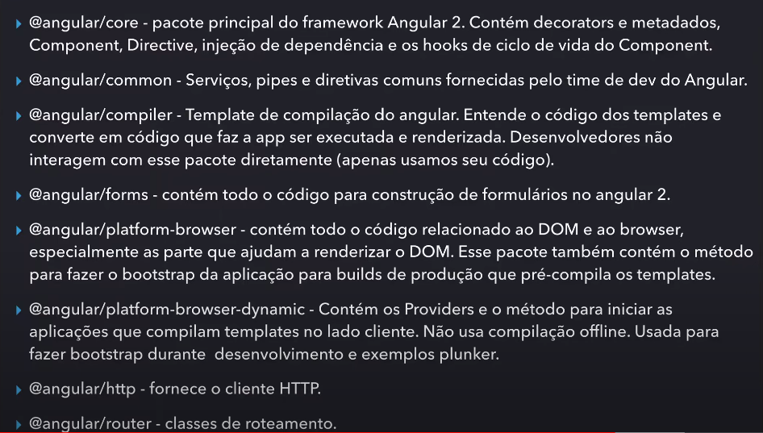

<p>GENERATE:</p>
<ul class="lista-ng">
  <li>ng g c [nomeComponente] - cria um componente.</li>
  <li>ng g m [nomeModulo] - criar modulo.</li>
  <li>ng g s [nomeServiço] - cria um serviço.</li>
  <li>ng g d [nomeDiretiva] - cria uma diretiva.</li>
  <li>ng g p [nomePipe] - cria um pipe.</li>
  <li>ng g c [nomeClass] - cria uma classe.</li>
  <li>ng g i [nomeInterface] - cria uma interface.</li>
  <li>ng g e [nomeEnum] - cria um enum.</li>
</ul>
<p>DEV COMANDOS:</p>
<ul class="lista-ng">
  <li>NG LINT - Depura o projeto para seguir o style guide(boas praticas) </li>
  <li>NG TEST - Executa os arquivos ".spec.ts" de teste. Ferramenta: Jasmine e Karma</li>
  <li>NG e2e - Executa um teste de integração(protractor).</li>
</ul>
<div>
  <p>Estrutura package.json("arroba"angular/"pacote"):</p>
  
</div>
